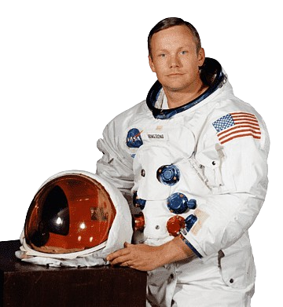
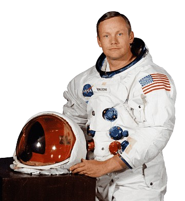

Misi Ke Bulan
 



Awal Mula
Ketika berbicara tentang penjelajahan luar angkasa, tidak ada pencapaian yang lebih ikonik daripada misi ke Bulan. Ini adalah kisah tentang keberanian, teknologi, dan tekad manusia yang melampaui batasan bumi.
Pada 1960-an, di tengah Perang Dingin, Amerika Serikat dan Uni Soviet berlomba untuk menunjukkan keunggulan teknologi dan eksplorasi mereka di luar angkasa. Perlombaan antariksa ini memuncak dengan tujuan ambisius: mengirim manusia ke Bulan dan membawanya kembali dengan selamat. Pada tahun 1961, Presiden John F. Kennedy mengumumkan niat AS untuk mendaratkan manusia di Bulan sebelum dekade berakhir.
Program Apollo 11 NASA
NASA, badan antariksa Amerika Serikat, merancang Program Apollo untuk mewujudkan visi ini. Program ini terdiri dari serangkaian misi yang masing-masing semakin mendekatkan tujuan besar tersebut. Apollo 11, yang diluncurkan pada 16 Juli 1969, adalah misi yang akan mengubah sejarah.
Apollo 11 Dikendalikan oleh komandan Neil Armstrong, pilot modul komando Michael Collins, dan pilot modul lunar Edwin "Buzz" Aldrin, Apollo 11 berhasil mencapai orbit Bulan. Pada 20 Juli 1969, Armstrong dan Aldrin memasuki modul lunar, "Eagle," dan memulai penurunan mereka ke permukaan Bulan.
Eksplorasi di Bulan
Selama lebih dari dua jam, Armstrong dan Aldrin menjelajahi permukaan Bulan, mengumpulkan sampel batuan dan tanah, serta memasang berbagai instrumen ilmiah. Mereka juga menancapkan bendera Amerika Serikat, meninggalkan jejak yang tak terhapuskan dalam sejarah eksplorasi manusia.
Setelah menyelesaikan misi mereka di Bulan, modul lunar kembali ke modul komando yang menunggu di orbit, dan ketiganya kembali ke Bumi dengan selamat. Mereka mendarat di Samudra Pasifik pada 24 Juli 1969 dan disambut sebagai pahlawan.
Warisan Keilmuan
Misi ke Bulan bukan hanya pencapaian teknologi; itu adalah simbol kekuatan dan potensi manusia untuk mengatasi tantangan terbesar. Hingga hari ini, pendaratan di Bulan menginspirasi generasi baru ilmuwan, insinyur, dan penjelajah untuk terus mendorong batasan pengetahuan dan eksplorasi.
Misi Apollo 11 dan misi-misi ke Bulan lainnya membuka jalan bagi pemahaman kita yang lebih dalam tentang Bulan dan alam semesta. Dengan beragam rencana eksplorasi masa depan, termasuk misi berawak ke Mars, warisan misi ke Bulan terus memicu semangat kita untuk mengeksplorasi hal yang belum diketahui.